个人资料
姓名：ninuxGithub
性别：男
出生日期：1992-06-19
英文名：ninuxGithub
学历：学士
平时热衷于各种java技术的学习和研究。 目前csdn博客已不再更新了， 将自己的学习的技术和工作中遇到的"坑"分享到了github博客； 没事时候爱好玩玩游戏，逛逛csdn博客的论坛，看看bilibili的高阶视频；
掌握的技能
- 1、精通Java语言，具有扎实的编程基础和良好的编程习惯以及代码规范。
- 2、熟练使用恒生的light框架。有扎实的JavaWeb基础， 项目前后端分离。
- 3、熟练掌握Hibernate、Spring、Mybatis、SpringMVC等开源框架技术，并能够用各大框架进行大型项目的开发。
- 4、熟练编写Javascript代码，熟练使用jQuery以及ajax异步交互技术等前台页面技术。
- 5、熟悉MySQL、SQL Server数据库，熟练掌握sql语句。
- 6、熟悉SVN、Maven， Git等项目开发及管理工具。
- 7、熟练掌握spring boot 微服务搭建和使用，熟练使用spring boot jpa + mybatis +redis。系统的学习过spring cloud。
- 8、熟练使用freemarker+ ftl模板进行word报表导出
- 9、熟悉腾讯云直播api。
- 10、了解过开源框架tx-lcn分布式事物的使用，阅读源码学习实现的思路。
工作经历
公司名称：德比软件
工作时间：2019-11-11——现在
工作描述：
- 负责独立维护和迭代accor (雅高酒店集团)需求， 和德比内部的功能开发；
- 承担build项目独立研发homeinn, premierinn
- 提供项目协议文档， 项目数据流
公司名称：上海恒生聚源数据服务有限公司
工作时间：2015-10-14——2019-10-30
工作描述：
- 根据规划的需求能够高效的完成DataService后台接口的开发 + 中台接口的调用 + 缓存的业务代码；
- 参与到项目的研发中承担核心功能的开发（例如资讯2.0）
- 承担项目的独立开发，整个项目模块的构建，业务代码独立完成 （例如报警平台）
项目经验
- 2021.3: accor开发
对accor新功能继续开发，以及德比内部的功能迭代，每月订单大概30k。
- 2021.3: premierinn研发
德比接入如家大概1000多家酒店，对接渠道HRS,每月订单大概3k。
- 2020.4: homeinn研发
德比接入如家大概3000多家酒店，对接渠道BookingCom,每月订单大概3k。
- 2019.9: 指数估值
- 2019.8: 项目报警平台
- 2019.5: 科创板
- 2018.12: 资讯2.0
- 2018.10: 主题基金
- 2018.08: 智能选股
- 2018.02: 财富有约的直播平台
- 2018.01：开始研究图片转视频播放+配音以及视频直播的技术
- 2017.11：智能小梵个股诊断
- 2017.07: 梵思终端的长江养老项目的开发
- 2017.03：梵思终端的fof工具
- 2016.04：财达项目（1-5期）
- 2015.02：投研平台代码研读
- 2015.11：梵思移动端的行情开发
作品效果图
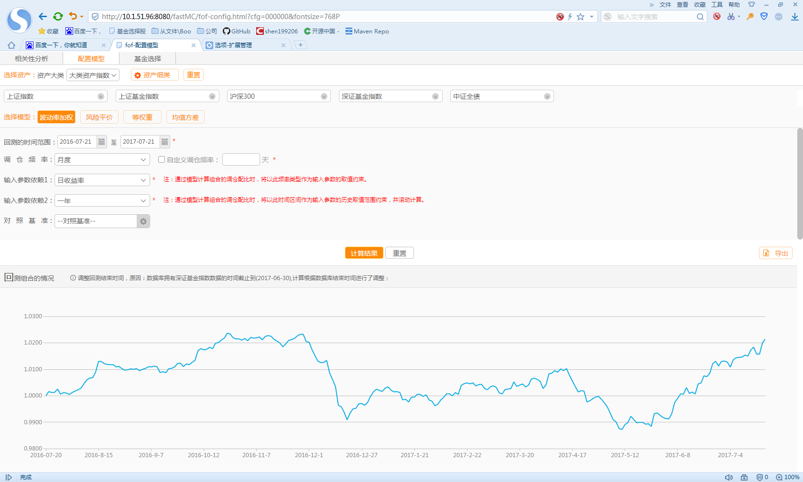
波动率加权

风险评价
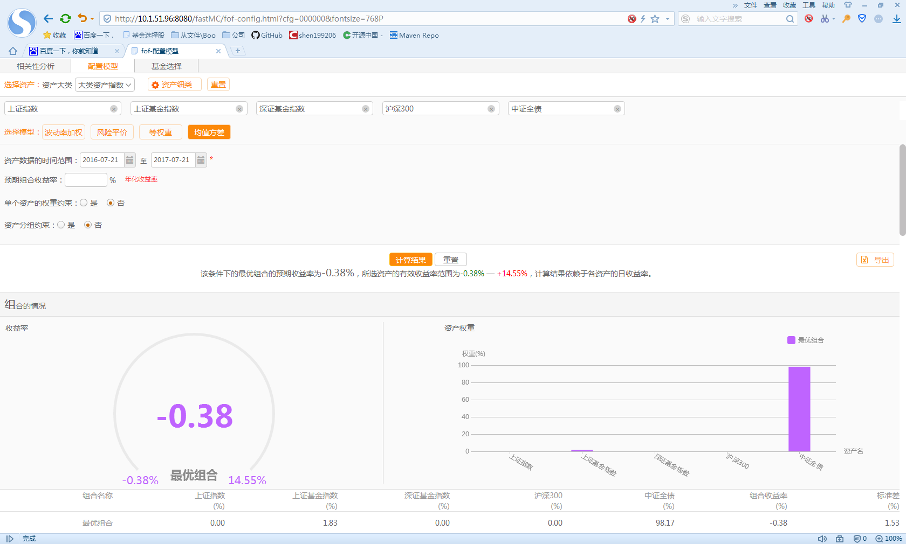
均值方差
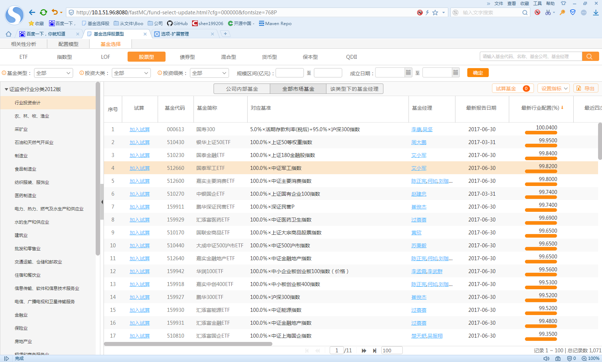
基金选择
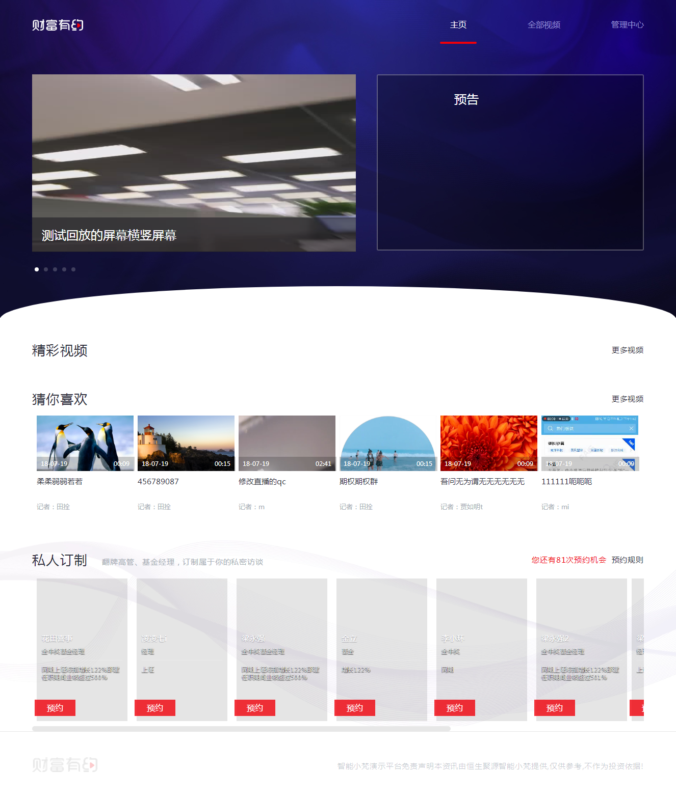
财富有约首页
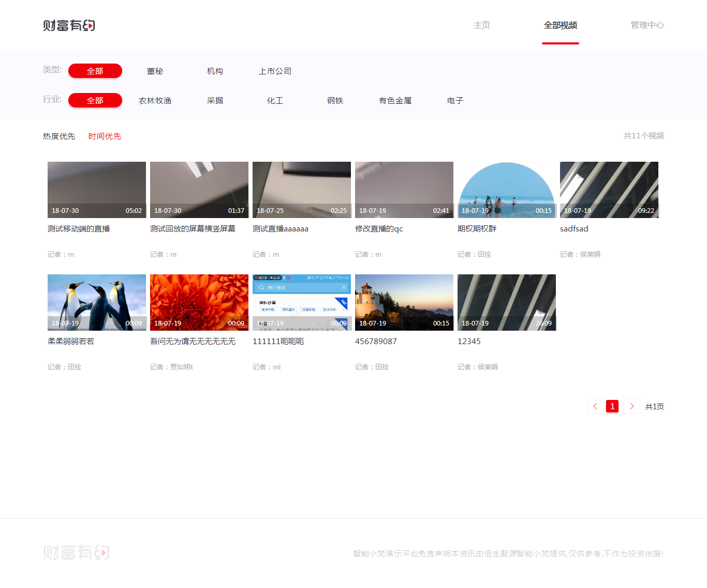
小梵直播
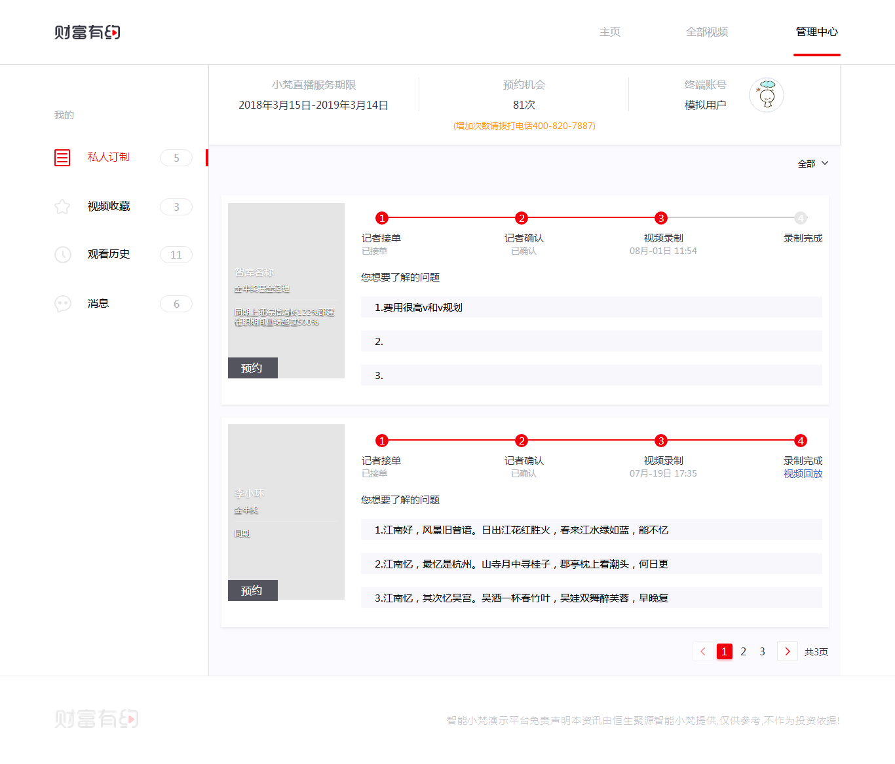
管理中心
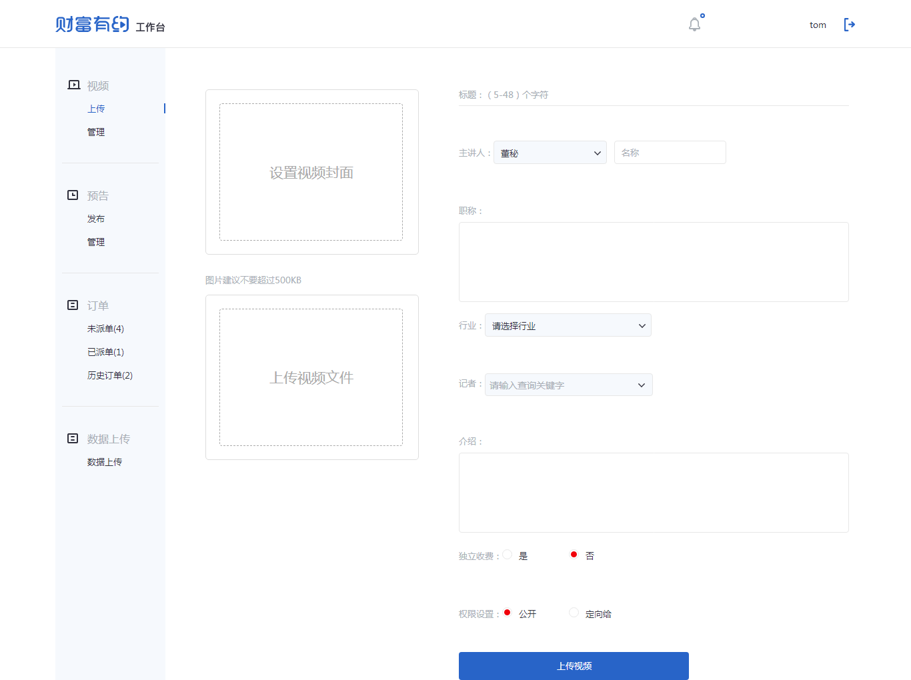
工作台
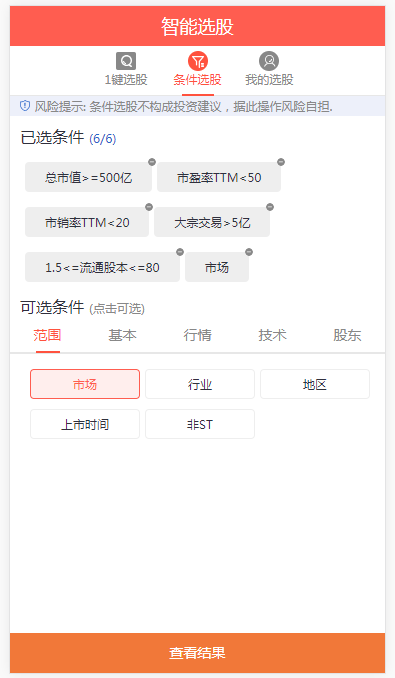
选股条件
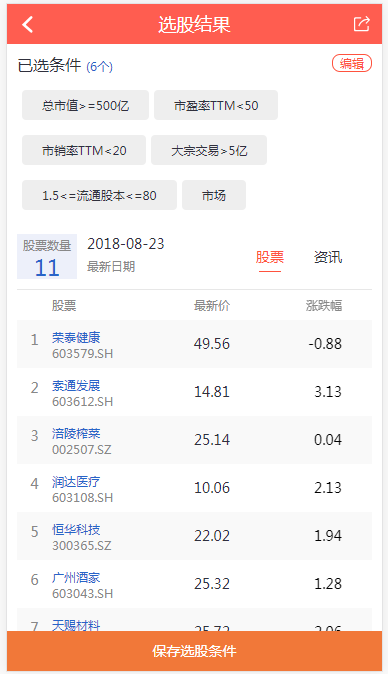
选股结果
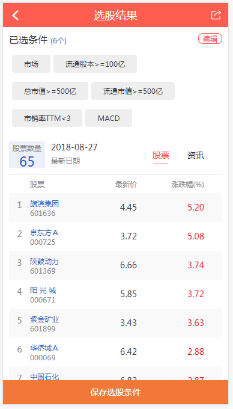
选股结果2
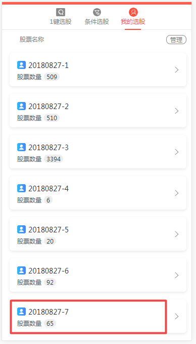
我的选股
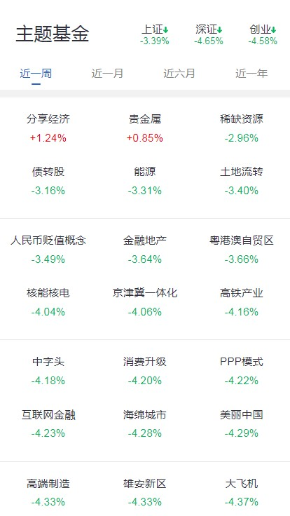
主题基金-首页
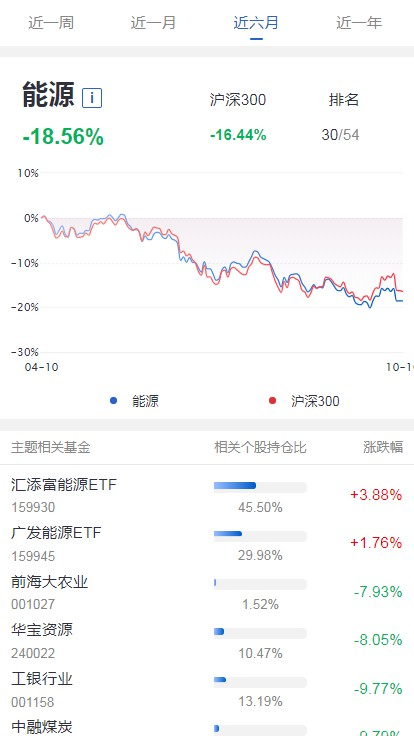
主题基金-详细
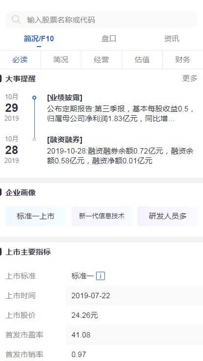
科创板F10
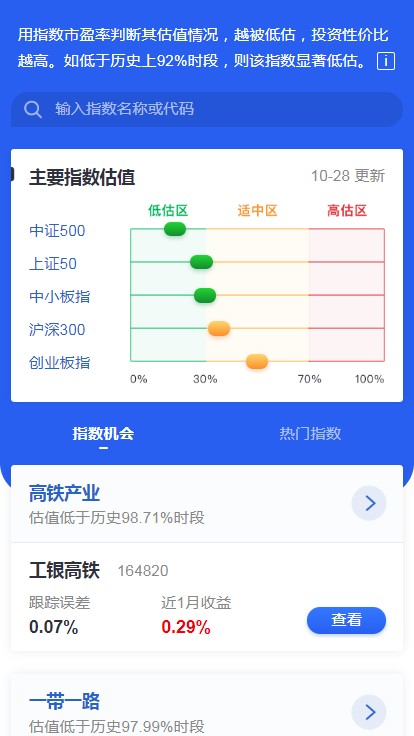
指数估值-首页
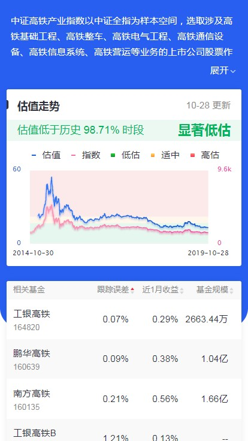
指数估值-内页
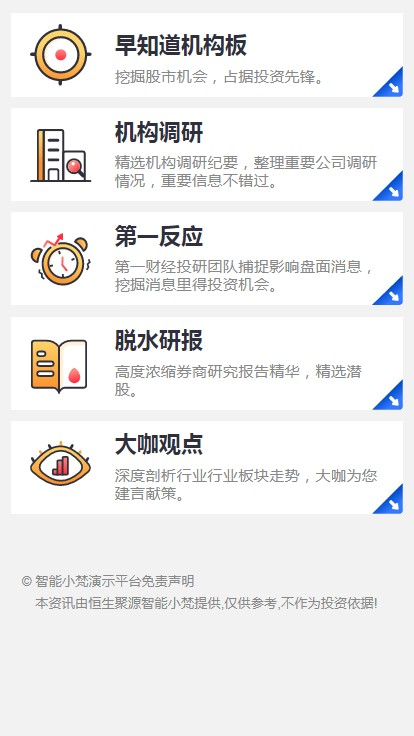
一财资讯